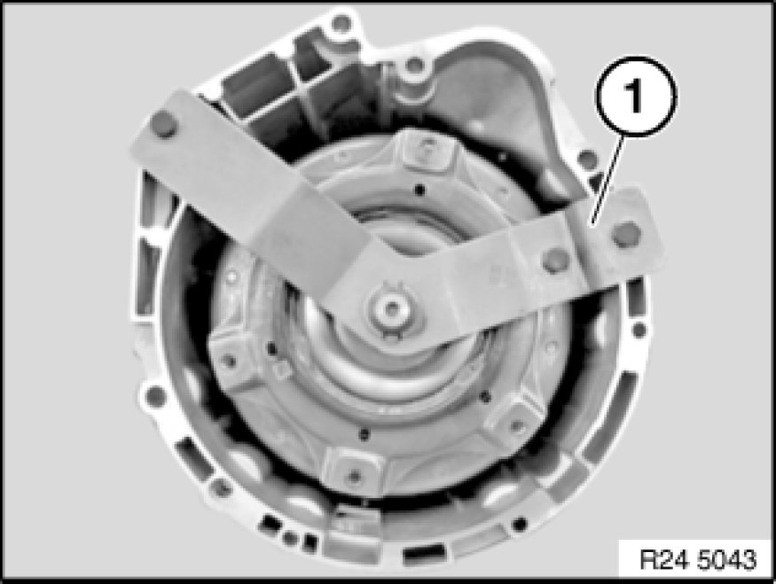

Installing Replacement Transmission (GA6L45R)
24 00 050 - Installing replacement transmission (GA6L45R)

Drain automatic transmission fluid at oil drain plug.
Tightening torque: 24 11 6AZ Transmission Housing, Transmission Oil Sump.

Recycling:
Catch and dispose of escaping transmission fluid.
Observe country-specific waste-disposal regulations

Important!
- Before installing replacement transmission, always flush transmission fluid cooler together with lines Flushing Transmission Oil Cooler with Lines (Automatic Transmission).
- After completion of work, check transmission fluid level Procedures.
Replacement transmission is supplied filled with transmission fluid.
Use only the approved transmission fluid.
Failure to comply with this instruction will result in serious damage to the transmission.

Necessary preliminary tasks:
- Remove transfer case Removing And Installing Transfer Case (ATC 400 X-Drive) (AWD)
- Remove automatic transmission Removing and Installing Automatic Transmission (GA6L45R)

Remove transportation lock (1).
Convert all cable holders.
Convert all seal plugs.
Remove protective cap on output shaft.
If necessary, modify transmission support block. Tightening torque 24 71 6AZ 24 71 Transmission Mounts.
Important!
After removing transportation lock, secure torque converter against slipping out.
Transmission identification:
- refer to BMW Parts Service.
- on type plate